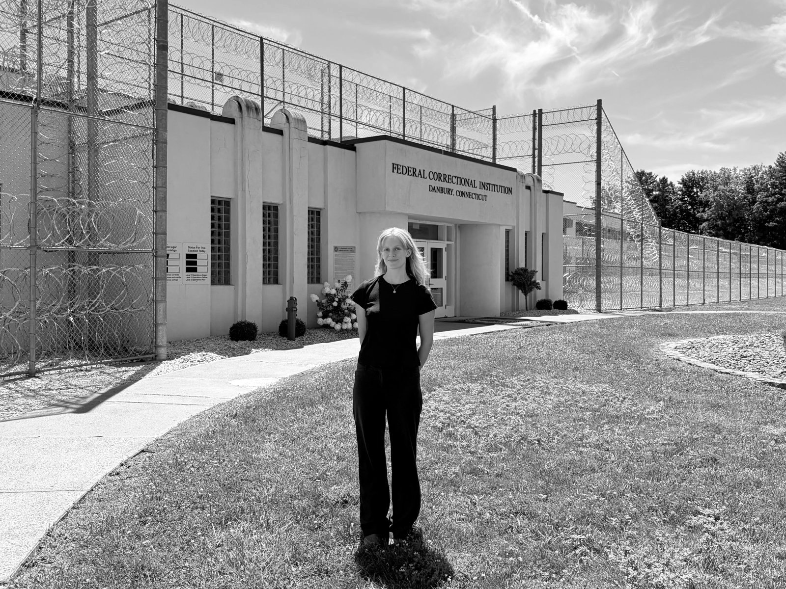
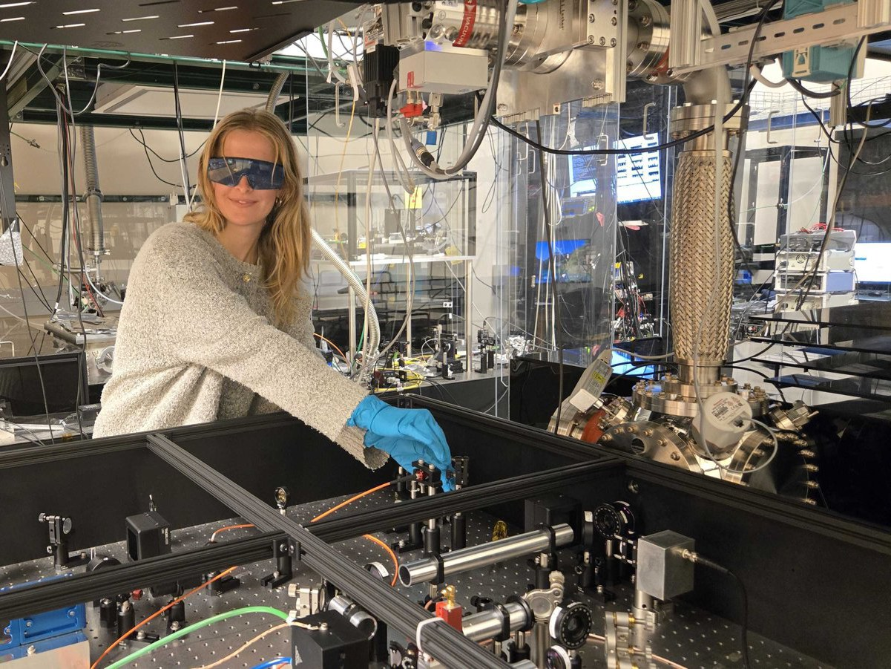
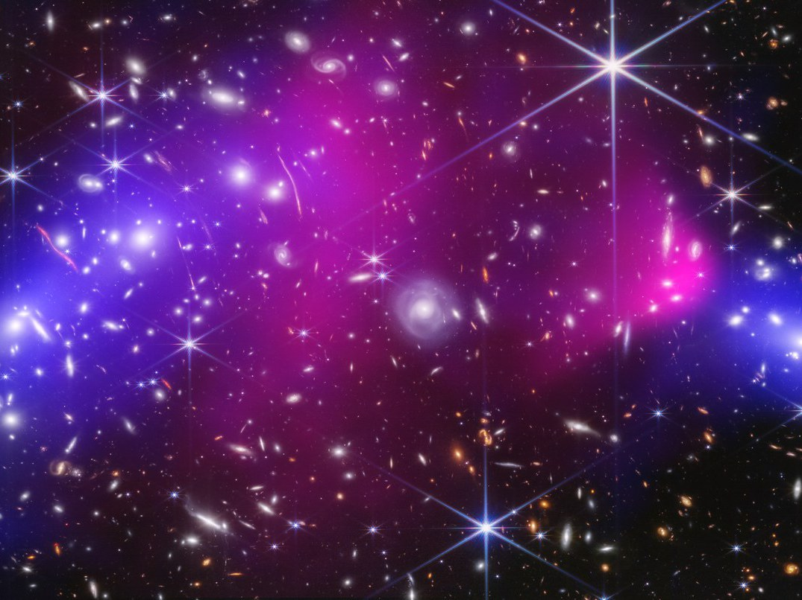

Marshall Plan Foundation FellowshipAwarded the Marshall Plan Foundation Fellowship and worked with Uroš Delić’s lab for four months at TU Wien. Here she developed a nanoparticle loading technique for the science goal of coupling a neutral Cs atom with a silica nanoparticle for the first time to create non-Gaussian states of nanoparticle motion.
NSF Graduate Research FellowshipAwarded the 2025 National Science Foundation Graduate Research Fellowship to develop arrays of levitated sensors for detecting dark matter directly.